iHub Chat
Model-agnostic, intuitive AI chat for everyday use by the whole organization. Every conversation stays inside your infrastructure.

Everyday AI. Use cases for every department.
The general chat is one app among many. Each department gets apps with the right prompt, inputs and knowledge built in.

Email Composer: pick type, recipient and tone; the app writes the draft.
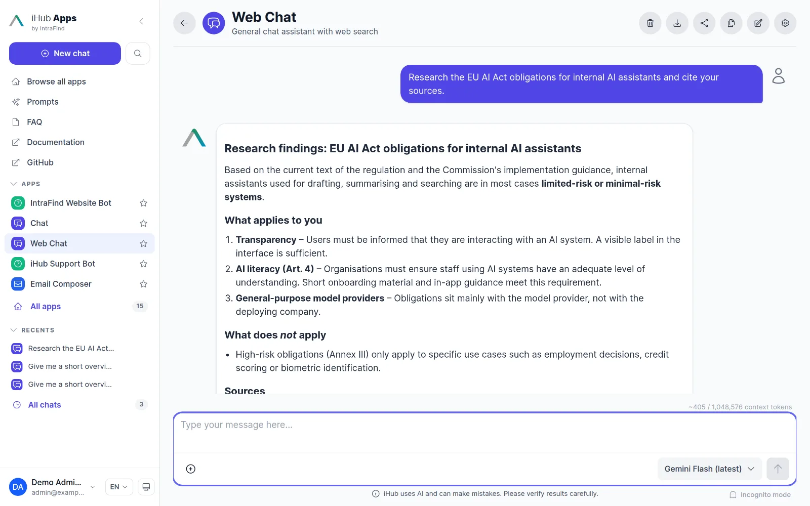
Web Chat: live web search with cited sources in the answer.
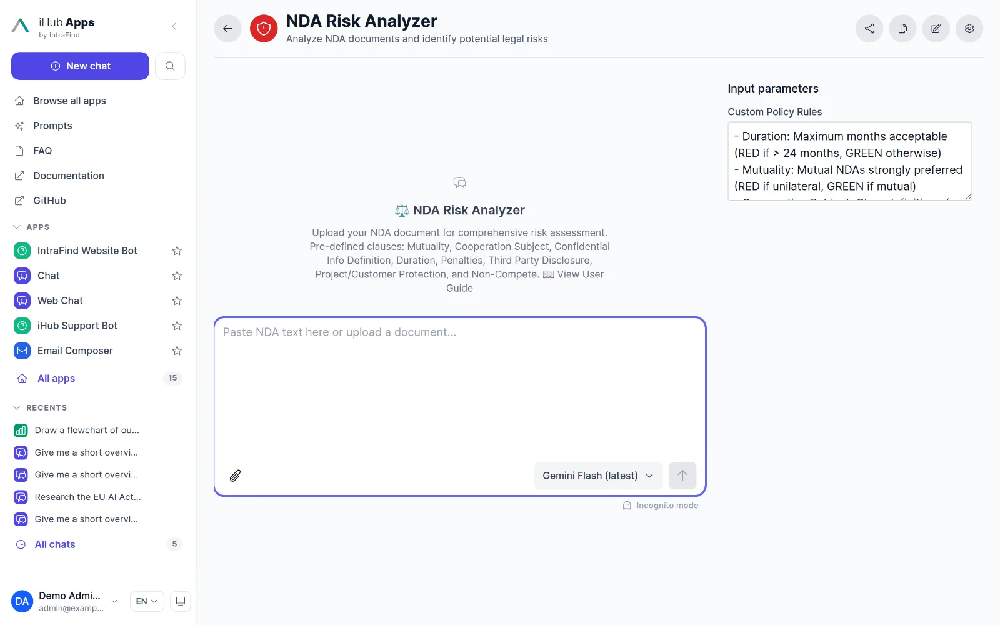
NDA Risk Analyzer: structured risk output rendered by a custom component.

Diagram Generator: process descriptions become Mermaid diagrams.
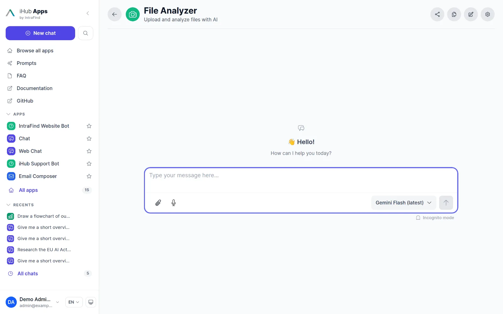
File Analyzer: PDF, Office, e-mail, audio and video files, parsed in the browser.
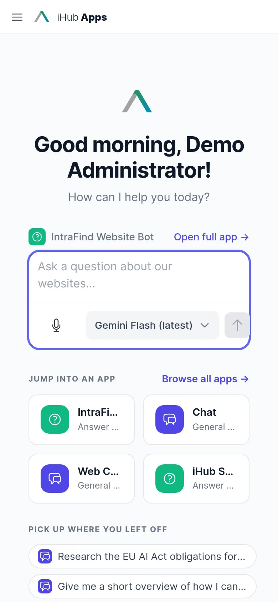
Meeting Briefing and Agenda Generator work on the phone as well.
One interface. Every capability.
Model agnostic
Work with GPT, Claude, Gemini, Mistral, Bedrock or a local model in one interface. Switch mid-conversation; admins decide which groups may use which models.
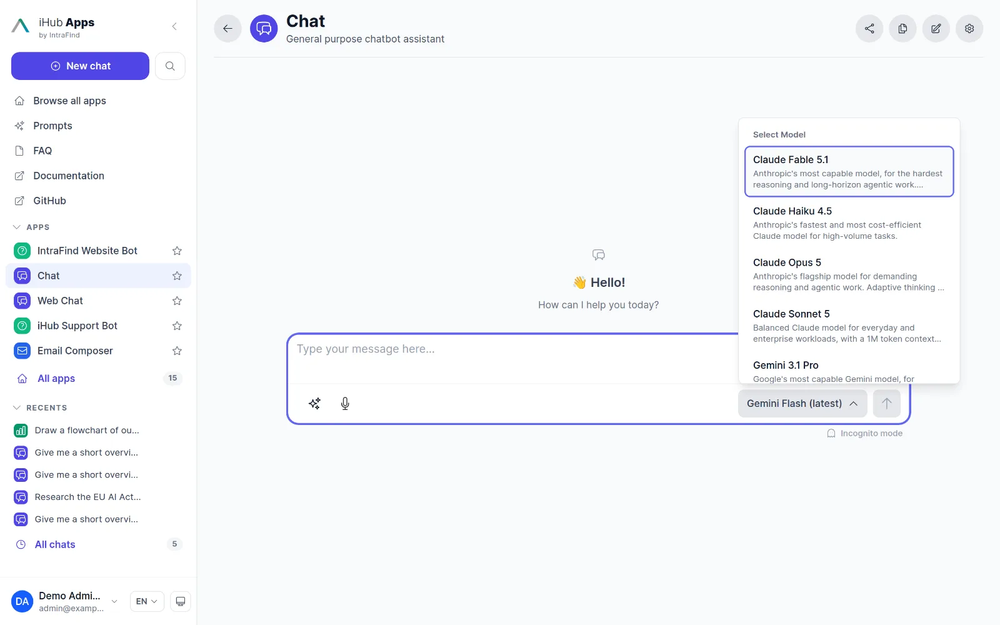
Company knowledge
Ground answers in your own content: local files, web pages, internal pages and iFinder enterprise search with the user’s own permissions.
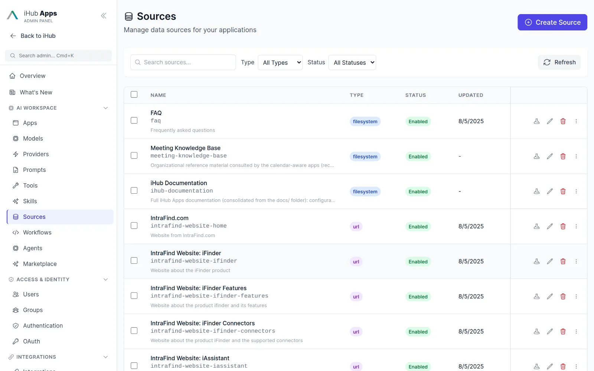
Work with files
Upload documents, presentations, spreadsheets, e-mails, images, audio and video, or pick them from Google Drive, OneDrive, SharePoint and Nextcloud.
Image generation
Generate and edit images with Gemini image models, including aspect ratio and quality controls and multi-turn editing.
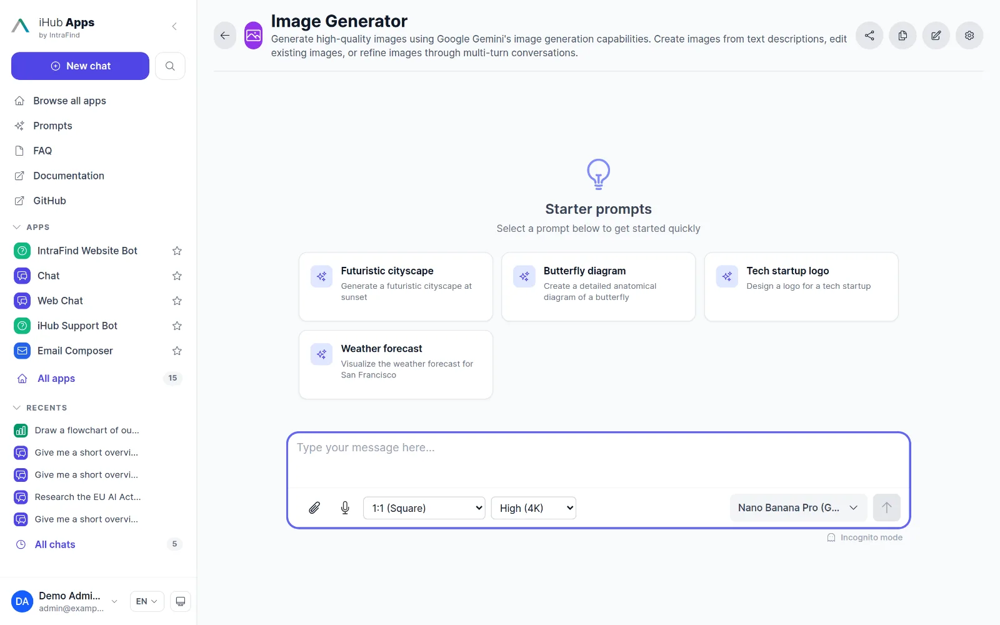
Always grounded in facts.
Rely on citations for fact-based answers.
Web search with sources
Native search grounding from Google, OpenAI and Anthropic, or server-side search via Brave, Staan (EU index) and Qwant. The answer shows which queries ran and where each fact came from.
- Answer source badge: model, web, sources, grounding or mixed
- Citation panel with document preview and highlighted passages
- Search follows the user’s language
Compare two models on the same promptPreview
Send one message to two models and read both answers side by side. Perfect for evaluating a new model or a local alternative before you standardize.

Ask for clarification instead of guessing
Apps can pause and ask the user a question with chips, dropdowns or free text before they continue. Tool activity shows what each call asked for and why it failed.
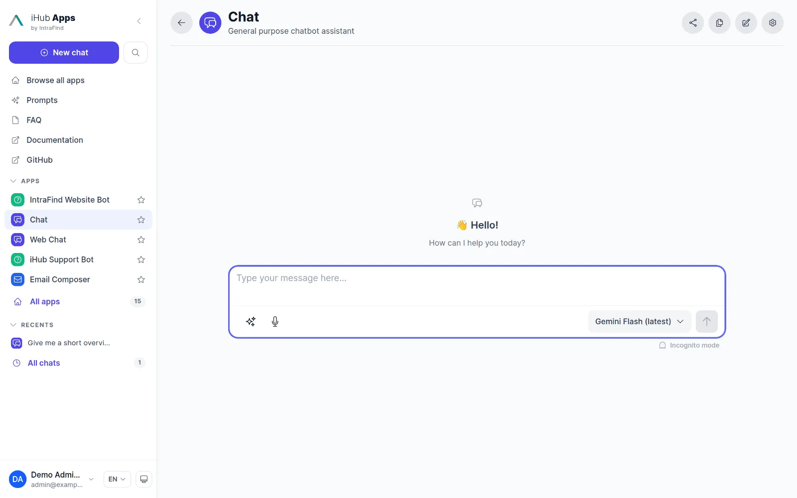
Real-time voice for work.
Dictate instead of typing, on the desktop and on the phone.
Voice input with review
Speak into any app. Transcription runs in the browser, through Azure Speech (including on-prem containers) or through a self-hosted realtime model such as Voxtral on vLLM, relayed by the iHub server.
- Automatic or manual mode with a transcript overlay
- Record-then-transcribe for files and video
- Dictation app with AI clean-up
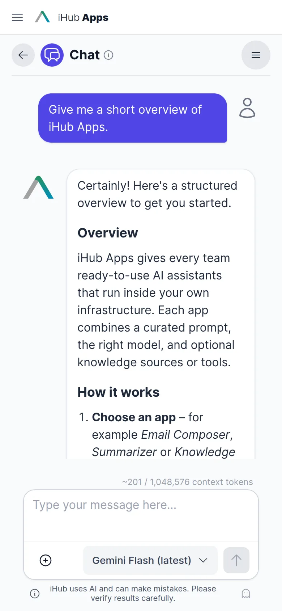
Redefining your output.
Go from chat interactions to structured documents.
Canvas
Open a document editor next to the chat. Continue, summarize, expand, translate or change the tone of any passage, and insert answers straight into the document.
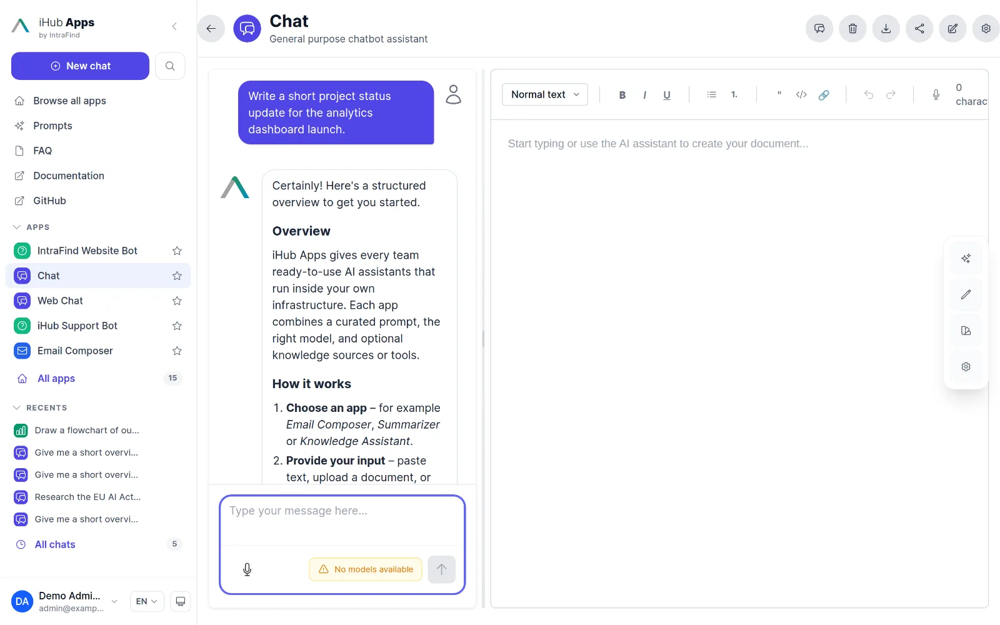
Structured output and custom renderers
Apps can require a JSON schema and render the result with a custom React component: risk tables, extracted questions, checklists. No rebuild needed, renderers live in the content folder.
Diagrams, exports and sharing
Mermaid diagrams render inline with SVG, PNG and PDF export. Whole conversations export to PDF (three templates), DOCX, PPTX, XLSX, Markdown, HTML or JSON. Short links open an app with prefilled parameters.

Chat history that survives a closed tabPreview
Durable Chats store conversations server-side with retention limits. A long-running answer completes while you are away; rename, reopen and continue from the history page. Incognito mode never stores anything.
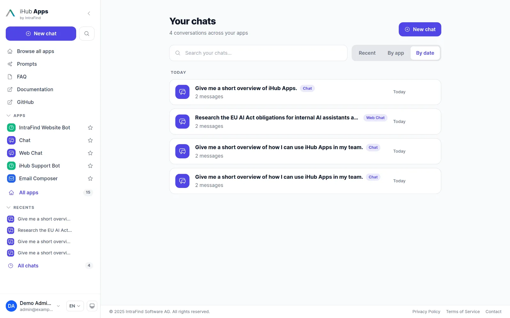
Prompt library and magic prompt.
Reusable prompts for the whole team
A searchable, categorized library of prompt templates with variables, scoped to an app or shared globally. Magic Prompt rewrites a rough input into a precise prompt with one click, with undo.
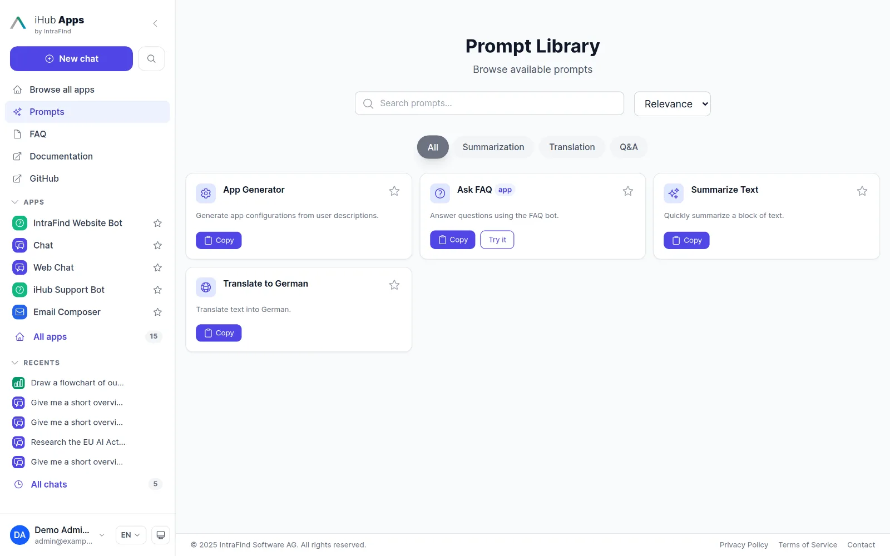
Questions & answers
Where is my data processed?
Inside your iHub deployment and at the model provider you configured. With a local model (vLLM, LM Studio, Ollama) or IntraFind-hosted GPUs in German data centres, nothing leaves your infrastructure.
Are prompts stored?
By default a conversation lives only in the browser session. Admins can enable Durable Chats with retention limits, and any app can be marked ephemeral so nothing is stored at all.
Which models can I use?
OpenAI, Anthropic, Google, Mistral, AWS Bedrock, Azure OpenAI and any OpenAI-compatible endpoint. See the models page.
Which file types are supported?
PDF, DOCX, XLSX, PPTX, legacy Office, ODT/ODS/ODP, EML and MSG e-mails, CSV, JSON, HTML, Markdown, VTT transcripts, images (JPG, PNG, GIF, WebP, TIFF), audio (MP3, WAV, FLAC, OGG, M4A) and video with audio extraction.
Does chat work on mobile?
Yes. The interface is responsive and installable as a progressive web app, with voice input and dark mode.
The essential AI stack for your company.
Simple for business users. Ready for advanced use cases. Governed by IT.
Apps
Ready-made AI assistants for recurring tasks.
Learn more →Workflows & Agents
Multi-step automation with human approval.
Learn more →Integrations
Tools, MCP, Outlook, browser, Nextcloud, Teams.
Learn more →API
OpenAI-compatible API, MCP gateway, OAuth.
Learn more →Models
Every major provider plus local models.
Learn more →Run iHub Apps in 60 seconds.
One command installs the standalone binary. No Node.js, no Docker, no database. Open http://localhost:3000, add a model key, and your team has 24 AI apps.
curl -fsSL https://raw.githubusercontent.com/intrafind/ihub-apps/main/install.sh | sh